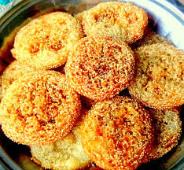

🍪 Anarsa

Ingredients
- 1 cup rice flour (soaked overnight)
- 1/4 cup grated jaggery
- 1/2 cup sugar
- 1/2 tsp cardamom powder
- 1/4 cup poppy seeds
- 2 tbsp ghee (clarified butter)
- 1/4 cup milk
- Pinch of salt
Instructions
- Soak the rice overnight and grind it into a coarse paste the next day. Drain any excess water.
- In a bowl, mix the rice flour paste with jaggery, sugar, cardamom powder, and a pinch of salt.
- Add ghee and milk, and knead the mixture into a smooth dough. Allow it to rest for about 30 minutes.
- Shape the dough into small balls, then flatten them into discs.
- Roll each disc in poppy seeds to coat both sides.
- Heat ghee in a pan and shallow fry the anarsas on low flame. Fry each side until golden brown and crisp.
- Remove from the pan and drain excess ghee on a paper towel.
- Allow the anarsas to cool and serve as a delicious sweet treat.
Serve With
- Chai (tea)
- Sweetened yogurt (optional)
💡 Tip: You can store Anarsa in an airtight container for several days and enjoy it as a snack.